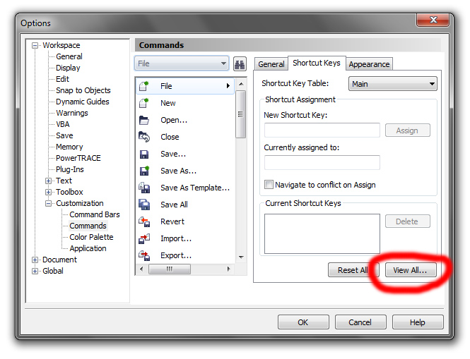

Горячие клавиши Corel Draw
Горячие клавиши Corel Draw
Вот список используемых по умолчанию горячих клавиш в программе Corel Draw (от версии к версии сочетание клавиш может меняться). Их не так много, поэтому запомнить их не сложно.
1. Работа с файлами
Ctrl+E Экспорт объектов в другой формат файла
Ctrl+I Импорт объектов из другого формата файла
Ctrl+N Создание нового документа
Ctrl+O Открытие существующего документа
Ctrl+P Печать документа, или выделенной области
Ctrl+S Сохранение активного документа
Ctrl+F6 Переход к следующему открытому документу
Ctrl+F4 Закрытие текущего активного документа
Alt+F4 Закрытие окна CorelDRAW
2. Режимы просмотра документа
F9 Просмотр документа в полноэкранном режиме
Ctrl+W Обновить окно
Shift+F9 Расширенный вид
3. Режимы правки и редактирования
Правка и редактирование очень похожи на комбинации клавиш, применяемых в офисных программах.
Ctrl+C, Ctrl+Insert Копирование выделенных объектов в буфер обмена
Ctrl+X, Shift+Delete «Вырезать» выделенные объекты с помещением их в буфер
обмена
Delete Удаление выделенных объектов без помещения их в буфер.
Ctrl+D Дублирование выделенных объектов
Ctrl+V, Shift+Insert Вставка объектов из буфера обмена
Ctrl+Z, Alt+Backspace Отмена последней выполненной операции
Ctrl+Shift+Z ReDo Восстановление изменений, проведенных командой UnDo
Ctrl+R Повторение последней операции
Ctrl+Q - Превратить текст в контур
Ctrl+Shift+Q - Превратить обводку в контур
Ctrl+K - Разбить кривую
Ctrl+L - Объединить (комбинировать) кривые
Ctrl+G - Сгруппировать объекты
4. Вызов DOCKER-окон
Docker-окнами называются мобильные окна, предназначенные для динамического изменения параметров во время редактирования документа. Docker-окна отображаются в правой части экрана между полосой прокрутки и палитрой цветов, еcли окно не нужно его легко свернуть.
Alt+F2 Настройка линейных размеров
Alt+F3 Docker-окно для создания эффектов Lens
Ctrl+F7 Docker-окно для создания эффектов оболочки Envelope объекта
Ctrl+F9 Docker-окно для создания эффектов
Ctrl+F11 Docker-окно Simbols and Special Characters для выбора элементов библиотеки символов
Ctrl+F5 Docker-окно Graphic and Text styles для отображения графических и текстовых стилей
Ctrl+F2 Docker-окно View Manager для переключения между видами
Alt+F7 Docker-окно Transform-Position для изменения положения, вращения, зеркального отображения и искажения выделенных объектов
Alt+F8 Docker-окно Transform-Rotate для вращения объекта
Alt+F9 Docker-окно Transform-Scale and mirror для масштабирования и зеркального отображения объекта
Alt+F10 Docker-окно Transform-Size для настройки размеров выделенных объектов
Последними четырьмя командами открывается одно докер-окно – Transform просто открывается сразу необходимая функция изменения и трансформации выделенного объекта.
5. Выравниваение и распределение объектов
Выравнивание и распределение объектов
производится с помощью окна:
Arrange -> Align&Distribute.
B Align Bottom Выравнивание объектов по нижней границе
P Center to page Выравнивание объектов по центру страницы
E Align center horisontally Горизонтальное выравнивание центров выделенных объектов
L Align left Выравнивание объектов по левой границе
R Align right Выравнивание объектов по правой границе
T Align top Выравнивание объектов по верхней границе
C Align center vertically Вертикальное выравнивание центров выделенных объектов
Распределение
Shift+T Distribute Top Вертикальное распределение объектов по верхней границе объектов
Shift+C Distribute centers vertically Вертикальное распределение объектов по центру объектов
Shift+A Distribute spacing vertically Вертикальное распределение объектов на равное расстояние между объектами
Shift+B Distribute bottom Вертикальное распределение объектов по нижней границе объектов
Shift+L Distribute left Вертикальное распределение объектов по левой границе объектов
Shift+E Distribute centers horisontally Горизонтальное распределение объектов по центру объектов
Shift+P Distribute spacing horisontally Горизонтальное распределение объектов на равное расстояние между объектами
Shift+R Distribute right Горизонтальное распределение объектов по правой границе объектов
6. Горячие клавиши вызова инструментов
F11 Заполнение выделенных объектов градиентной заливкой (открываем окно град. заливки)
F10 Переход к инструменту Shape
F12 Открытие диалогового окна Outline Pen для настройки контура объекта
Shift+F12 Открытие окна Outline Color для изменения заливки выделенных объектов
A Переход к инструменту Spiral Tool для создания спиралей
D Переход к инструменту Graph Paper Tool для разлиновки листа
F6 Переход к инструменту Rectangle Tool
F7 Переход к инструменту Ellipse Tool
F8 Переход к инструменту Text Tool
G Заполнение выделенных объектов градиентной заливкой
I Применение к выделенной кривой эффектов Artistic Media Tool
M Заполнение выделенных объектов Mesh-заливкой
X Удаление части объекта, или разделение его
Y Создание многоугольника
H Включение режима просмотра изображения с помощью инструмента "рука"
N Включение режима просмотра с помощью окна просмотра изображения
F2 Увеличение выделенной области до размеров экрана
F4 Максимальное увеличение всех объектов на странице
Shift+F2 Максимальное увеличение выделенных объектов
Shift+F4 Ориентация изображения относительно печатной страницы
F9 Просмотр рабочей области документа в полноэкранном режиме
7. Горячие клавиши работы с цветом
Ctrl+(клик цвет) смешивание цвета
Alt+(клик цвет) изменение цвета обводки
А кто скажет, что нужно сделать, чтобы эти горячие клавиши начали работать?
Нажимаю CTRL-O,D, .... не работает.
На других компьютерах болячка решалась сменой языка, но не на этом... что делать?
Установлен Corel 11 на win XP
abcolut, просто зайди в настроики и назначь клавиши
просто нажмите текст тул, наберите пару символов, потом можете их удалить и кнопки заработают.
Переустановка не поможет, только если не сделать чистку реестра после удаления или переустановка виндовозов!
Подскажите, пожалуйста, где можна найти англо-русский словарь терминов Corel. По Фотошопу много, а по Corel ни разу не попадалось. Может у кого-то есть, поделитесь, плиииззз
nata1410, а собственно для чего он нужен этот словарь?
Вот ей богу незнаю для чего вообще эти клавишные сочетания публиковать. Всегда же можно зайти в настройки корела:

Там их даже распечатать можно :)
+1
Я использую такие комбинации!
Ctrl+T Transformations
Alt+T Select All Text
Alt+A Align
Alt+R Copy Properties
Alt+1 PowerClip
Alt+2 Extract PowerClip
Ctrl+B Convert to Bitmap
Alt+W Simple Wireframe
Alt+E Enhanced
Далеко тянуться до F6, поэтому проще CTRL+TAB или CTRL+SHIFT+TAB
Помогите назначить горячую клавишу на скрыть\показать слой в диспетчере слоев.
Также не могу разобраться как назначить клавиши на операции формирования - пересечь, вычесть и тп.
Zigzain,
Инструменты – Параметры – Команды – Показать все элементы. Далее внимательно ищите в алфавитном порядке Ваши команды создания комбинированных контуров: Объединить (не путайте с Объединить объекты, смотрите внимательно пиктограммку), Исключить, Пересечение, Упрощение, Задние минус передние, Передние минус задние.
Для Скрыть/Показать слой - такого нет, равно как и для Печатаемый/Непечатаемый, Редактируемый/Нередактируемый. Это только в Диспетчере объектов ручками. Собственно это и не удивительно, т. к. это не команды над объектами или документом.
Если уж Вам так часто надо делать слой видимым/невидимым, попробуйте оставить его всё время видимым, но чтобы не мешал при работе над объектами в других слоях, накройте его полупрозрачной маской или его объекты сделайте бледными ненасыщенными, если там растровые объекты – переведите в однобитное и также сделайте другим цветом.
Страницы